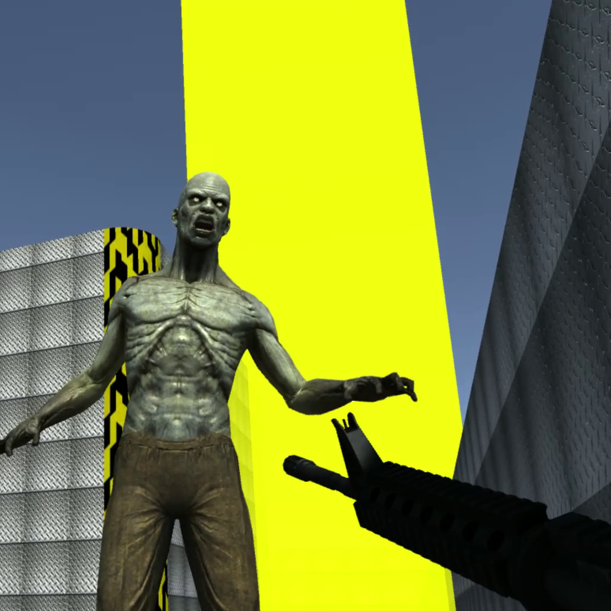

Mad Jumpgate

Descripció
Característiques:
- 5 nivells
- 4 tipus d'armes diferents
- Diversos objectes curatius i armilles antibales
- Granades
- Spawn d'enemics segons la ubicació del jugador
- Trampes
- 5 tipus d'enemics dividits en 2 categories amb diferents habilitats
- Efectes especials
- Marcador del dany causat
- Explosions
- Canvi de l'ambientació del joc al tenir poca salut
- Música diferent segons el nivell i el moment del joc.